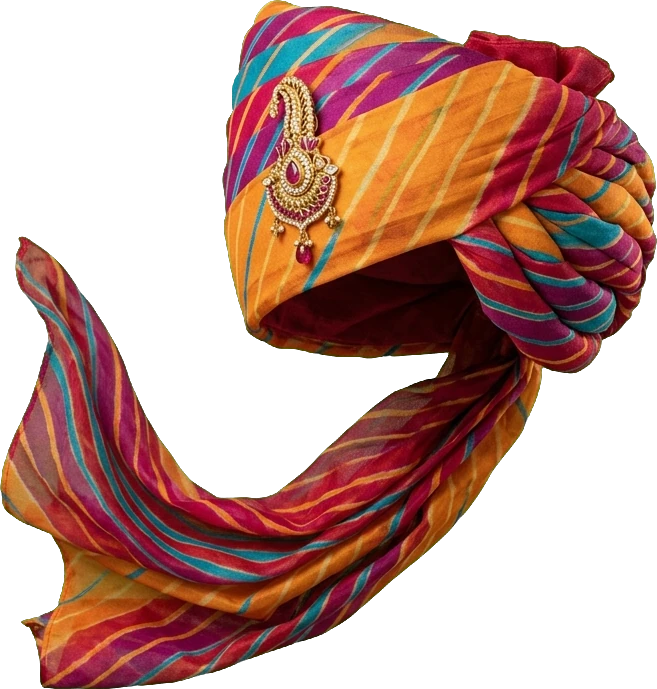
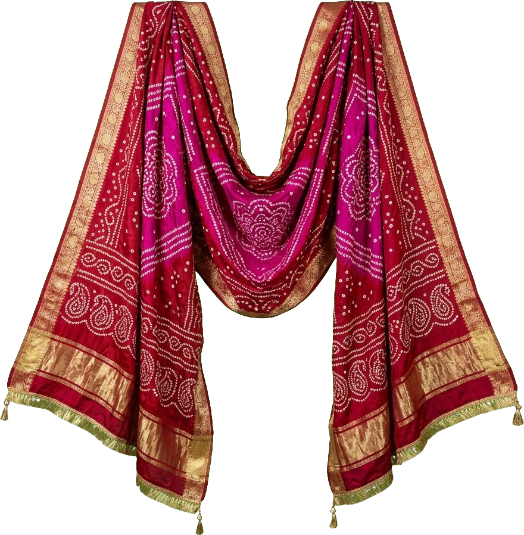
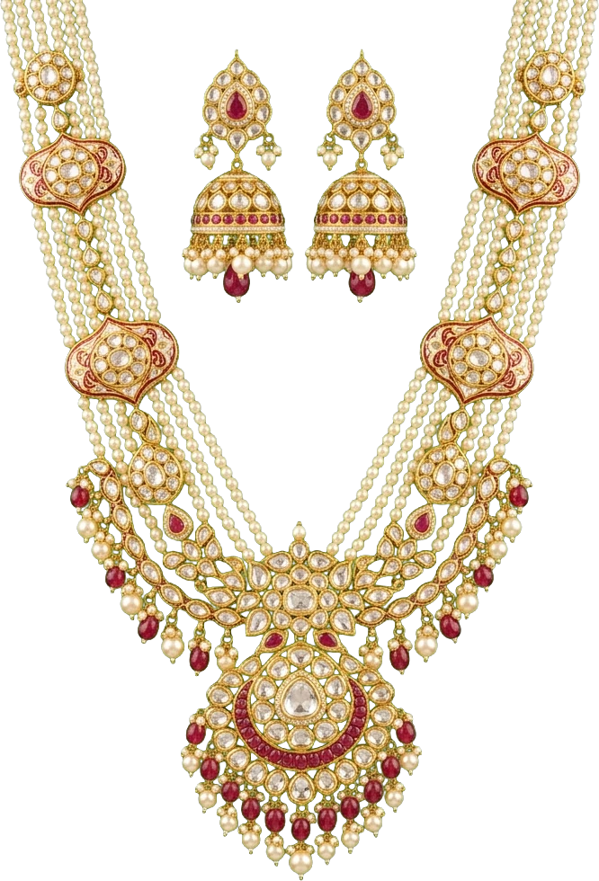
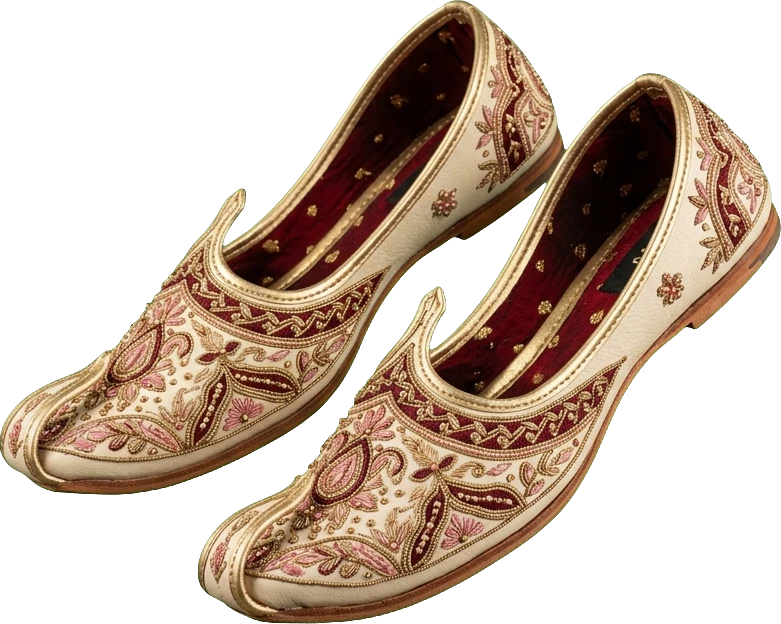
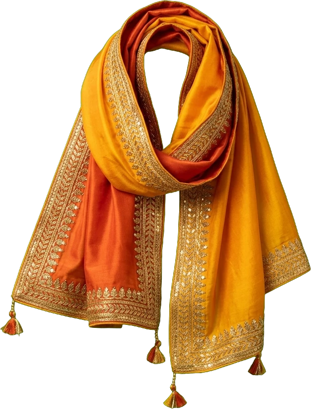
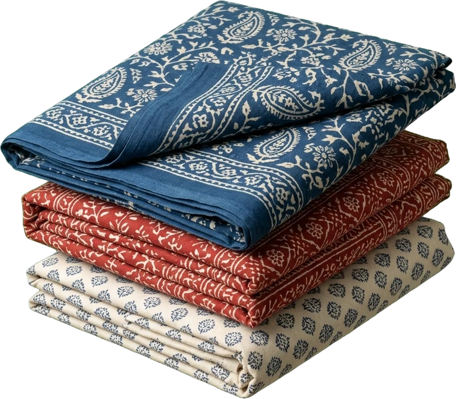
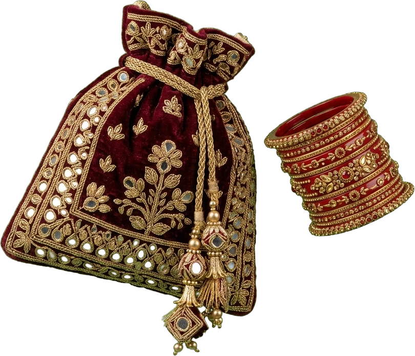

01
Safa
Leheriya Silk · साफ़ा
Wave-dyed in spiralling bands, wound by hand into the Jodhpuri crown. Finished with a ruby kalgi and a single peacock plume.
Est. Jaipur · Since 1911
पधारो म्हारे देस
Safas, odhnis & jewels
made by hand in Rajasthan
The Collection

01
Leheriya Silk · साफ़ा
Wave-dyed in spiralling bands, wound by hand into the Jodhpuri crown. Finished with a ruby kalgi and a single peacock plume.

02
Bandhani Georgette · ओढ़नी
Thousands of tiny knots, each pinched and bound by fingernail, bloom into a field of dots after the madder bath.

03
Polki, Pearl & Gold Foil · कुंदन हार
Uncut stones set in pure gold foil, strung on seven rows of basra pearls — the way the jewellers of Johari Bazaar have for four centuries.

04
Camel Leather & Zari · मोजड़ी
Vegetable-tanned uppers stitched with zari and resham; the toe curls upward like the arch of a palace jharokha.

05
Gota-Patti Silk · दुपट्टा
Saffron silk edged in hand-folded gota ribbon, scalloped and tasselled for the wedding season of the Aravallis.

06
Hand-Block Cotton · सांगानेरी
Indigo, madder and natural ivory, stamped by teak blocks carved in Bagru and washed in the Saraswati's soft water.

07
Velvet Zardozi & Lac · पोटली
A maroon velvet potli worked in gold zardozi, paired with lac chooda rolled warm over charcoal in Maniharon ka Rasta.
Crafts of Rajasthan
Every piece we make begins in a workshop that has passed its tools down for generations. These are the crafts our collection is built on.
Jaipur
Quartz, not clay — ground with glass and fuller's earth, painted in cobalt and fired once. A Persian art that found its home at the court of Sawai Ram Singh II.
Bagru & Sanganer
Chhipa families carve teak blocks by hand and stamp each repeat by eye. Indigo, iron-rust black and pomegranate yellow — all from the earth.
Sikar & Jodhpur
Cloth pinched into thousands of points and bound with thread before dyeing. When untied, a constellation appears — the oldest resist-dye in India.
Maniharon ka Rasta, Jaipur
Resin from the lac insect, warmed over coals, rolled, coloured and pressed with glass and stone. Worn in pairs for every festival of the year.
Jodhpur & Barmer
Camel and goat hide, vegetable-tanned and embroidered with cotton, silk and zari. No left or right — each pair learns the shape of its wearer.
“Cobalt forgives nothing. You paint it once, and the kiln tells the truth.”
Meet the Artisans
We work directly with 140 master artisans across eleven districts. Every piece carries the name of the person who made it.
Explore Rajasthan
Every city of the old Rajputana wears its own colour, its own turban, its own craft. Choose a city to see what it gives to our wardrobe.
The Pink City
Planned in 1727 by Sawai Jai Singh II and washed terracotta-pink to welcome a prince. Home of our atelier.
Heritage
Stories
Inside a Sikar courtyard where three generations of women tie bandhej by the light of the afternoon.
Why the best block prints are stamped before the desert sun climbs over the dye vats.
From Mughal courts to Jodhpur weddings — the quiet history of India's most elegant shoe.
Visit the Atelier